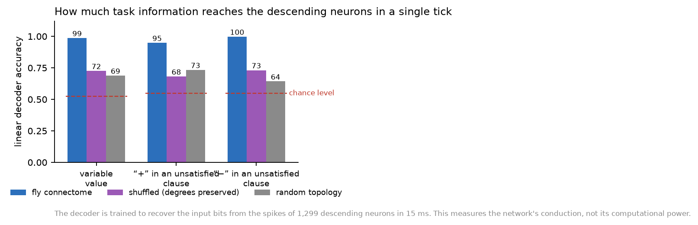
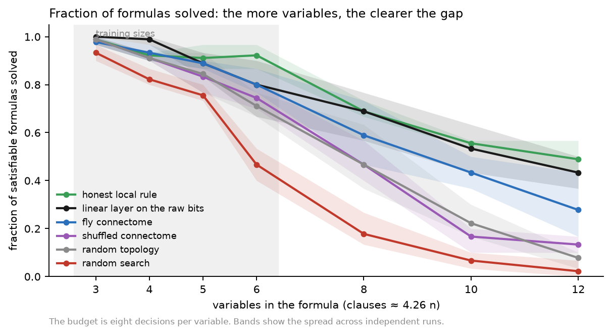
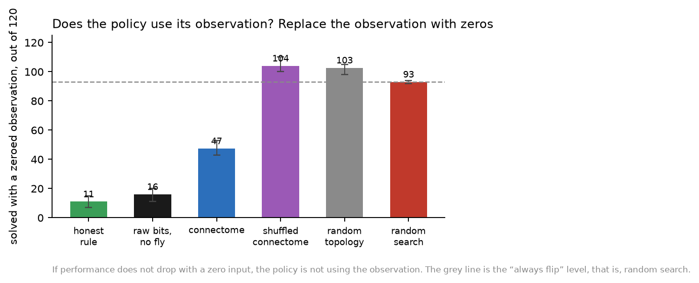
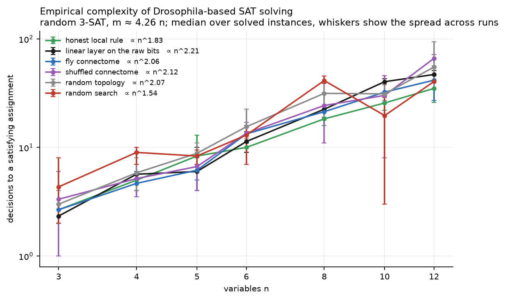

Using the Drosophila connectome as a fixed reservoir for Boolean satisfiability, and what that does and does not show
In brief. We asked, half in jest, whether the fly connectome can help solve Boolean satisfiability — the classic NP-complete problem. The honest answer is no. It cannot solve SAT, it does not scale, and nothing here bears on P versus NP in any way whatsoever.
What we did find is worth reporting. Used as a fixed nonlinear reservoir with a single trained linear layer on top, the real connectome carries the task's information to its output neurons almost losslessly — 95 to 99 per cent of the input bits are linearly recoverable from a single 15-millisecond tick, and a linear layer on those features reproduces an honest hand-written rule with 96.5 to 96.9 per cent accuracy. Two null models of exactly the same size, one a degree-preserving shuffle of the same wiring and one a random topology, fail completely: their linear layers learn nothing beyond the majority answer. Along the way our first attempt produced a policy that looked functional and was in fact ignoring its input entirely; the check that caught it is described below, because it is the most transferable thing in this document.
The main experiment asked what a connectome adds to controlling a body. This one asks something smaller and stranger: does the activity of a biological wiring diagram carry usable information about a symbolic problem it has no business knowing anything about?
The framing is reservoir computing. A reservoir is a fixed dynamical system that nobody trains: you push an input into it, let it evolve, and read its state. All the learning happens in a single linear layer on top. Reservoirs are useful precisely because a rich enough dynamical system turns simple inputs into a high-dimensional, temporally smeared representation from which a linear readout can extract a great deal. The question here is whether 138,639 leaky integrate-and-fire neurons wired the way a fly's brain is wired make a good reservoir, and — the part that matters — whether the biological wiring is better than an arbitrary one of the same size.
Everything below concerns toy instances. We must state plainly, and will repeat at the end, that no result here says anything about the complexity of SAT, about P versus NP, or about what fly brains do in nature.
Random 3-SAT with the number of clauses set to 4.26 times the number of variables, which is the ratio at which random instances are hardest. Training set: 3 to 6 variables, forty satisfiable formulas per size. In-distribution test: the same sizes, thirty satisfiable and ten unsatisfiable per size, none of them appearing in training. Extrapolation test: 8, 10 and 12 variables, again thirty and ten per size.
Exhaustive search labels every formula as satisfiable or not, and verifies every solution an agent claims to have found. It never takes part in any policy. With at most twelve variables this brute force is an exact oracle, so no SAT solver was needed; the check that no agent ever “solved” an unsatisfiable formula passed everywhere.
The agent walks through the variables of a formula one at a time, in a random order that is reshuffled after every full sweep, and for each variable decides whether to flip its value. The same scorer is applied to every variable; the number of variables appears nowhere in the readout. This matters for the extrapolation test: a policy trained on six variables can be applied to twelve without padding, masking or any positional weights that could memorise a particular size.
The agent sees exactly three bits per decision: the variable's current value, whether it occurs positively in some currently unsatisfied clause, and whether it occurs negatively in one. This is a severe compression of the formula — two completely different instances can present identical observations — so the setting is partially observable by construction. That is deliberate, and it is what makes a reservoir with memory potentially interesting: if it helps, it helps by carrying history, not by understanding logic.
The budget is eight decisions per variable. Success means every clause satisfied within that budget, confirmed by the oracle.
| Agent | What it sees | What is trained |
|---|---|---|
| Random search | nothing | nothing: flips with probability one half |
| Honest local rule | the three bits | nothing: flips whenever the variable sits in an unsatisfied clause |
| Linear layer on the raw bits | the three bits | five parameters |
| Fly connectome | spikes of 1,299 descending neurons | 1,300 parameters |
| Shuffled connectome | the same, degrees and weights preserved | 1,300 parameters |
| Random topology | the same, only size and weights preserved | 1,300 parameters |
The three reservoirs differ only in their wiring. Input groups, readout population, neuron model, parameters and the training procedure are identical.
The three observation bits, plus one channel that is always on, drive four groups of forty head-bristle sensory neurons through the brain model's own Poisson inputs. The network advances by 15 milliseconds per decision; its state persists within an episode and is restored between episodes. The features are the fresh spikes of every descending neuron in that tick. The connectome itself is never modified — only the linear layer learns.
We first trained the linear layer by reinforcement, rewarding it for the change in the number of satisfied clauses. Training looked healthy: by the end the agent was solving 22 to 25 of the last 25 training episodes. On the extrapolation test it solved about 20 of 90, which is poor but not obviously broken.
Then we ran the check that every such experiment needs. Take the trained agent and feed it an all-zero observation instead of the real one. If the policy is using its input, performance must collapse. It did not: the agent solved 97 to 114 instances out of 120 with the observation blanked, against 104 to 110 with it intact.
The policy had learned exactly one thing — always flip — and “always flip” is a respectable random walk that solves easy instances. Judged by success rate alone it looked like a working agent. It was not.
Why this is the most useful paragraph here. A trained model that ignores its input can be indistinguishable, on the headline metric, from one that uses it. The ablation costs one extra evaluation pass and is decisive. We now run it on every learned policy in this project, and we report it in every table below.
The immediate cause was mundane. The state “this variable is in no unsatisfied clause” is encoded as three zero bits; with no input the network is silent, the feature vector is all zeros, and a linear layer has nothing to distinguish that state with except its bias. We added a fourth, permanently active input channel so that every state produces a non-zero response. That is not a leak: the readout still sees only descending spikes. The results of the first version are kept in the repository as a negative control.
Before blaming the connectome, we asked whether the failure was one of optimisation rather than of representation. We trained a linear decoder to recover the three input bits from the descending spikes of a single tick, with a held-out split, and did the same for the previous tick's bits to measure how much history the network's state carries.
| Reservoir | variable value | “+” in unsat clause | “−” in unsat clause | previous tick | neurons active per tick |
|---|---|---|---|---|---|
| Fly connectome | 98.6% | 94.8% | 99.7% | 87–98% | 3.5% |
| Shuffled, degrees preserved | 72.5% | 68.1% | 73.1% | 77–81% | 0.09% |
| Random topology | 68.8% | 73.3% | 64.2% | 63–66% | 0.03% |
Held-out accuracy of a linear decoder; chance is 50 to 59 per cent depending on the bit. The last column is the fraction of the 1,299 descending neurons that fire at least once in a tick.
The answer is unambiguous. In the real connectome the input bits arrive at the descending population essentially intact, and a good deal of the previous tick survives as well. In the shuffled network they arrive degraded, and in the random one more degraded still; both surrogates drive fewer than two descending neurons per tick, against roughly forty-five in the original.
So the information was there, and reinforcement learning had simply failed to find it: gradient ascent over 1,300 weights with six hundred episodes of a noisy, sparse signal is not a serious optimiser. Reporting “the connectome cannot do it” on that basis would have been a mistake.

The decisive experiment is supervised rather than reinforcement-based, and it separates two questions the plan for this project insisted on keeping apart: whether an agent can learn to solve the task, and whether it can imitate a known good policy. Here we ask only the second, because it is the one that isolates the reservoir.
We trained the same linear layer to reproduce the honest local rule's decisions from the reservoir's features, on states visited under a mixed policy so that the training data is not merely the rule's own comfortable trajectory. If the reservoir represents the observation adequately, the layer should clone the rule almost exactly, and the cloned agent should perform like the rule. If it does not, it cannot.
| Reservoir | cloning accuracy | solved, n ≤ 6 | solved, n ∈ {8, 10, 12} | zeroed-observation control |
|---|---|---|---|---|
| Raw bits, no fly | 100% | 107–112 / 120 | 47–52 / 90 | 11–20 / 120 |
| Fly connectome | 96.5–96.9% | 107–110 / 120 | 36–43 / 90 | 43–53 / 120 |
| Shuffled connectome | 84.8–85.8% | 103–105 / 120 | 22–25 / 90 | 100–110 / 120 |
| Random topology | 84.7–85.9% | 103–104 / 120 | 20–27 / 90 | 98–105 / 120 |
The majority class in the cloning data has frequency 0.86, so a cloning accuracy of 84.7 to 85.9 per cent means the layer learned nothing beyond answering “flip” every time. The last column is the ablation: random search solves 93 of 120 with a zeroed observation, so a figure near 100 means the policy is not using its input.
The ladder is clean, and it is the one worth having. Only the real connectome lets a linear readout approximate the rule; both surrogates collapse onto the majority answer despite having the same number of neurons, the same number of connections and the same multiset of weights. The ablation column says the same thing from the other side: the connectome-based policy loses more than half its performance when its observation is blanked, while the surrogate policies lose nothing because they never used it.
The connectome still does not match direct access to the three bits: 36 to 43 solved against 47 to 52 on the larger instances. Four per cent of cloning errors compound over an episode of up to ninety-six decisions, and the gap is exactly that accumulation.


For completeness, and because a log-log plot is what everyone will ask for, here is the median number of decisions needed to reach a satisfying assignment, over the instances that were solved.

Every fitted exponent is between n1.5 and n2.2, which looks polynomial and is meaningless as a complexity claim, for three independent reasons. The median is taken over solved instances only, and the fraction solved collapses as n grows, so the hardest instances silently leave the sample — the curve measures the easy tail, not the problem. The budget is capped at 8n decisions, so no agent can produce a large number even if it needed one. And random search, which cannot possibly have a good complexity, shows the flattest exponent of all, n1.54, for exactly these reasons. The plot is a description of the solved subset. It is not a measurement of anything.
Every learned policy is reported with the zeroed-observation ablation, above. In addition:
It shows that the real fly wiring conducts an injected signal to its descending neurons far better than a shuffle preserving every degree and every weight, and far better than a random graph of the same size — well enough that a single linear layer on one 15-millisecond snapshot can approximate a hand-written rule, which the surrogates cannot do at all. That is a real, measured, reproducible difference between the biological topology and its null models, and it is consistent with what the main experiment found behaviourally.
It does not show that the connectome computes anything. The decoder reads back the very bits we injected; the network that wins is the one that conducts them best. Conduction is not computation, and a good reservoir is not a solver.
It does not show that a fly can solve SAT. The best connectome-based agent solves fewer instances than a rule that fits on one line, and both fall off steeply as the formulas grow.
And it has no bearing on P versus NP. The instances have at most twelve variables, the budget is capped, the fitted exponents come from a censored sample, and the whole apparatus is a curiosity built on top of a behavioural experiment. Anyone quoting this document as evidence about complexity classes is misquoting it.
The code is sat_fly.py (problem, agents, training, evaluation, self-checks), sat_decode.py (the decodability probe) and paper/sat_figures.py (the figures). The formula sets, every run log with its per-instance outcomes, the decodability tables and the summary are in results/sat-fly/; the first, degenerate version is preserved in results/sat-fly/v1-no-tonic/.
.venv-brain/bin/python sat_fly.py check
.venv-brain/bin/python sat_fly.py gen
.venv-brain/bin/python sat_fly.py run --agent heuristic --seed 0
.venv-brain/bin/python sat_fly.py run --agent fly --seed 0 --clone
.venv-brain/bin/python sat_fly.py run --agent fly-shuffled --seed 0 --clone
.venv-brain/bin/python sat_fly.py run --agent fly-random --seed 0 --clone
.venv-brain/bin/python sat_decode.py --kinds fly --seed 0 --episodes 60
.venv-body/bin/python paper/sat_figures.pyA reservoir run takes roughly forty minutes on one core: every decision advances a network of 138,639 neurons by 15 milliseconds of simulated time, and an evaluation sweep makes several thousand decisions. Run at most four in parallel on a 32 GB machine.